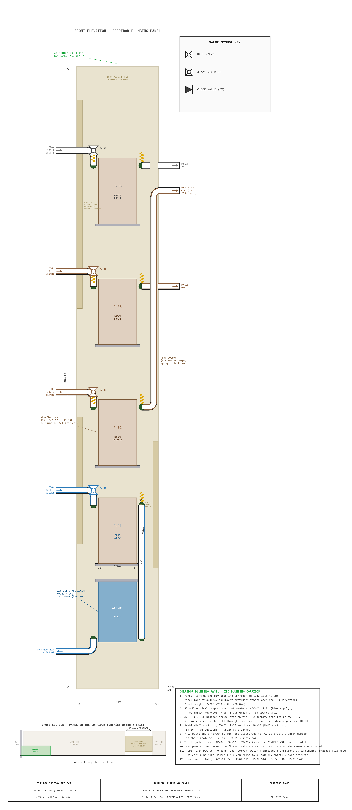
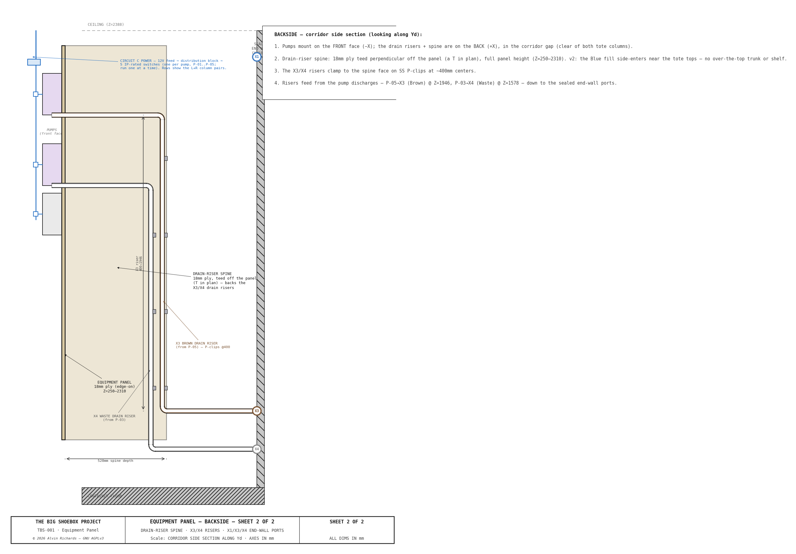

Equipment Panel Report¶
1. Purpose¶
The equipment panel is an 18mm marine plywood board mounted vertically at the
front (cargo-door-facing) mouth of the IBC plumbing corridor at X=4874mm —
moved forward from the sealed end (ibc-reconfig-v2) for walkway reach-in
access, mounting on the front-portal frame (~X4734). It spans the full 270mm
corridor width (Yd=1046–1316mm) and 2060mm in height (Z=250–2310mm). All pumps,
filters, the pressure accumulator, diverter valves,
and isolation valves mount on this single panel, concentrating the entire
water-handling system in one accessible location within the IBC zone.
The panel serves three functions:
- Structural mounting surface — provides a rigid, flat substrate for equipment that would otherwise require individual mounting brackets on the corrugated container walls.
- Plumbing coordination — all pump suction and discharge lines, filter connections, and valve positions are organized on one face, minimizing pipe runs and simplifying maintenance.
- Accessibility — the panel faces the open end of the container (-X direction). The operator approaches from the right walkway (X=4329–4629mm) and reaches into the 270mm corridor to access valves and pump switches.
2. Panel Specifications¶
| Parameter | Value |
|---|---|
| Material | 18mm marine plywood (BS 1088 or equivalent) |
| Face dimensions | 270mm wide (Yd) × 2060mm tall (Z) |
| Orientation | Vertical, perpendicular to sealed end wall |
| Panel face X position | 4874mm — corridor front mouth (equipment protrudes toward cargo door, -X; tip ~4744mm, clear of film rail X=4649) |
| Bottom edge Z | 250mm (120mm above walkway deck) |
| Top edge Z | 2310mm (78mm below ceiling at Z=2388mm) |
| Corridor width | 270mm (Yd=1046–1316mm, between near and far IBC columns) |
| Mounting | L-brackets to the front-portal frame uprights (~X4734), 4 points |
| Finish | Sealed with marine varnish or epoxy; white face for visibility |
3. Equipment Layout¶
The panel face is divided into two zones: a filter skid at the bottom and a pump zone above, with equipment arranged in columns for pipe routing efficiency.
Equipment Panel Layout — Front elevation with pump zone, filter skid, valves, and full plumbing routing

Backside (corridor side section) — what is mounted on the back of the panel: the drain-riser backing spine (18mm ply teed off the panel, with a lowered top and a capped shelf), the X3/X4 drain risers running from the P-05/P-03 discharges down to the sealed end-wall ports, and the Blue fill trunk resting on the shelf. Pumps mount on the front face; the drain/fill runs are on the back, in the corridor gap clear of both tote columns.

3.1 Filter Skid — Z=200–1280mm¶
Three 4.5"×10" Big Blue filter housings mounted vertically (sump down) in a slotted angle frame. The housings stack vertically with 30mm gaps between them. Flow path: P-02 output → F-01 (top, coarsest) → F-02 (middle) → F-03 (bottom, finest) → pH test point → 3W-DV-01.
| Component | Position (Z, mm) | Specification |
|---|---|---|
| F-01 (sediment) | 940–1,280 | 4.5"×10" Big Blue, 50μm MPP melt-blown polypropylene |
| F-02 (heavy metal) | 570–910 | 4.5"×10" Big Blue, KDF-55 heavy metal removal |
| F-03 (carbon) | 200–540 | 4.5"×10" Big Blue, CTO coconut shell activated carbon |
| Slotted angle frame | 200–1,280 | 25×25×3mm slotted steel angle, 130mm wide |
Each housing has 1" NPT inlet and outlet ports on the head (top). Inter-housing piping connects F-01 OUT → F-02 IN and F-02 OUT → F-03 IN using 1" HDPE pipe with 90° elbows routed outside the housing bodies. Housings mount to an 18mm plywood backing board within the slotted angle frame via U-bracket clamps with 25mm HDPE spacer blocks for sump-bowl clearance.
Replacement interval:
| Stage | Cartridge | Removes | Replace every |
|---|---|---|---|
| F-01 | 5μm MPP sediment | Gross sediment, fiber lint, Prussian blue particles | 25 prints |
| F-02 | KDF-55 | Dissolved iron from ferricyanide wash water | 30 prints |
| F-03 | CTO carbon block | Residual organics, color | 20 prints |
Alternative: A single 3-stage combo unit (e.g. Purcooflow WHF2045B302 or iSpring WGB32B) with 4.5"×20" cartridges eliminates inter-housing plumbing and the separate frame. The combo unit mounts directly to the panel with its integrated bracket. 1" NPT inlet/outlet; a single 1/2"→1" bushing reducer connects P-02 output to the unit inlet. See Water System Report §3.2 for sizing rationale.
3.2 Pump Zone — Z=1120–1960mm¶
Five Shurflo 2088 pumps in a 2-column layout above the filter stack:
| Pump | Column | Position (Z, mm) | Circuit | Function |
|---|---|---|---|---|
| P-01 | Left | 1,120–1,338 | Blue | Clean water supply to spray bar |
| P-04 | Left | 1,378–1,596 | Black/Brown | Tray drain transfer (sump → IBC-3 or IBC-4) |
| P-02 | Right | 1,120–1,338 | Brown | Brown recycle (IBC-3 → filter train) |
| P-03 | Right | 1,378–1,596 | Black | Waste evacuation (IBC-4 residual → external drain) |
| P-05 | Right | 1,746–1,964 | Brown | Brown drain-out (IBC-3 → external drain) |
All pumps are identical Shurflo 2088-554-144 units: 12VDC, 3.5 GPM, 45 PSI, self-priming diaphragm. Vertical mount orientation with ports at the head (top), 127mm body width × 218mm body height × 100mm protrusion from panel. Each pump mounts on a stainless steel mounting bracket with 4 bolts through the plywood.
Left column (Yd=0–127mm, near IBC side): P-01 and P-04 share suction from the near IBC column (Blue IBC-1/IBC-2 and tray sump respectively).
Right column (Yd=143–270mm, far IBC side): P-02, P-03, and P-05 serve the Brown and Waste circuits from the far IBC column.
Pump electrical — Circuit C (one at a time)¶
All five pumps run from the single Circuit C feed (12V DC, 15A fuse, 14 AWG from the Blue Sea fuse block — see Electrical Report §7.2–7.3). At the panel the feed lands on a 12V DC distribution block (positive + shared negative bus) at the top of the pump zone; from it, five individual IP-rated rocker switches — one per pump — fan out, each feeding its pump on a short 16 AWG branch.
| Item | Spec |
|---|---|
| Feed | Circuit C, 14 AWG, 15A fuse (one feed for all five pumps) |
| Distribution | 12V DC + / − bus block at the pump-zone top |
| Switches | 5 × IP-rated sealed rocker (12V, 16A), panel-face-mounted by each pump for corridor access |
| Branches | 16 AWG, ~0.5–1m, switch → pump + (7.5A / 90W per pump) |
The pumps are operated one at a time: the operator enables the pump for the current task at its switch (others off), opens the relevant ball valves, and the Shurflo's internal demand/pressure switch then runs the pump on demand. The 15A fuse covers a single pump with margin; simultaneous running is not intended. Switches and the distribution block sit above the spill line, IP-rated and sealed, with drip loops, per the wet-zone rules in Electrical Report §7.5.
3.3 Accumulator — Z=1746–1896mm¶
| Parameter | Value |
|---|---|
| Model | SeaFlo or equivalent, 0.75L (23.5 oz) |
| Dimensions | 127mm OD × 150mm length |
| Position | Left column, above P-04 (Z=1746mm) |
| Port | 1/2" NPT, bottom |
| Function | Smooths P-01 pump cycling, maintains pressure when pump is off |
ACC-01 sits inline on the Blue discharge path between P-01 outlet and BV-02. The accumulator's air bladder absorbs pressure pulsations from the diaphragm pump, providing steady flow to the spray bar.
4. Valves¶
4.1 Ball Valves (Isolation)¶
| Valve | Size | Position | Function |
|---|---|---|---|
| BV-01 | 1/2" | P-01 suction header | Blue supply isolation — closes Blue circuit |
| BV-02 | 1/2" | Blue discharge to spray bar | Operator control — open during wash passes |
| BV-06 | 3/4" | Chemistry tap on pinhole wall | Shut-off for chemistry mixing water |
| BV-07 | 1/2" | Above P-05 | Brown IBC-3 drain-out isolation |
| BV-08 | 1/2" | P-03 suction | Waste IBC-4 drain-out isolation |
BV-02 is the primary operator-controlled valve. It is mounted on the pinhole wall (Yd=0) at X=2399mm, Z=900mm — waist height from the walkway deck, directly in front of the operator during spray bar wash passes.
4.2 Diverter Valves (3-Way)¶
| Valve | Size | Position | Function |
|---|---|---|---|
| 3W-DV-01 | 1" FNPT | After filter skid + pH test point | Routes filtered Brown water to Blue (IBC-2) or Black (IBC-4) based on pH reading |
| 3W-DV-02 | 1/2" FNPT | P-04 discharge | Routes tray drain water to Brown (IBC-3) or Black (IBC-4) based on operator judgment |
3W-DV-02 is the operator judgment valve: set to Brown (default) for normal rinse water, switch to Black for heavy contamination events.
3W-DV-01 is the pH-gated valve: if filtered water reads pH 6–7, route to Blue (IBC-2) for recycling; if pH >7.5 or discolored, route to Black (IBC-4).
4.3 Check Valves¶
| Valve | Size | Position | Function |
|---|---|---|---|
| CV-1 | 1" NPT | X1 bulkhead fill line | Prevents backflow from IBC-1 to external port |
| CV-3 | 1" NPT | X3 bulkhead drain line | Prevents backflow from external to IBC-3 |
| CV-4 | 1" NPT | X4 bulkhead drain line | Prevents backflow from external to IBC-4 |
Spring-loaded inline check valves (PVC body, EPDM seal) on each external bulkhead line. Installed in the IBC zone, not on the equipment panel.
5. Pipe Specifications¶
| Run | Schedule | Nominal Size | OD (mm) | Material | Notes |
|---|---|---|---|---|---|
| Pump suction/discharge | Sch 40 | 1/2" | 21 | HDPE | Matches Shurflo 2088 port thread |
| DV-02 outputs | Sch 40 | 1/2" | 21 | HDPE | To IBC-3 or IBC-4 |
| DV-01 outputs | Sch 40 | 1/2" | 21 | HDPE | To Blue IBC-2 or Black IBC-4 |
| Filter inter-stage | Sch 40 | 1" | 33 | HDPE | Matches Big Blue 1" NPT ports |
| Filter outlet → DV-01 | Sch 40 | 1" | 33 | HDPE | Gravity flow, lower restriction |
| IBC fill/drain (internal) | Sch 40 | 1" | 33 | HDPE | IBC valve to corridor |
| IBC fill/drain (external bulkhead) | Sch 40 | 2" | — | Steel/brass | Bulkhead unions with camlock |
| Spray bar flex hose | — | 1/2" | — | Reinforced braided PVC | ~4m coiled, BV-02 to beam center feed |
All pump-driven internal runs use 1/2" pipe, matching the Shurflo 2088 pump ports (1/2"-14 male parallel thread). This eliminates reducer fittings at pump connections. The only reducer is a single 1/2"→1" bushing at the filter skid inlet (P-02 output to F-01 input).
6. Flow Paths¶
6.1 Blue System — Clean Water Supply¶
IBC-1/IBC-2 → BV-01 → P-01 → ACC-01 → BV-02 → spray bar
P-01 draws from the Blue IBC manifold (two IBCs plumbed in parallel via 1" HDPE with isolation valves), pressurizes through ACC-01 (0.75L accumulator), and delivers to BV-02 on the pinhole wall. A 4m flexible hose connects BV-02 to the spray bar center feed bulkhead.
6.2 Brown System — Used Water Recycling¶
Tray sump → P-04 → 3W-DV-02 → IBC-3
IBC-3 → P-02 → 1/2"→1" reducer → F-01 → F-02 → F-03 → pH test → 3W-DV-01
→ IBC-2 (if pH 6–7) or IBC-4 (if pH drift)
P-04 lifts drain water from the processing tray sump (~900mm head) to IBC-3. P-02 recirculates IBC-3 water through the 3-stage filter train. After filtering, the operator checks pH and sets 3W-DV-01 to route either back to Blue (IBC-2) or to Waste (IBC-4).
6.3 Black System — Waste Containment¶
3W-DV-01 reject → IBC-4
3W-DV-02 contaminated → IBC-4
IBC-4 → P-03 → external drain port X4 (gravity + pump assist)
P-03 is dedicated to waste evacuation. IBC-4 gravity-drains through external port X4 (Z=200mm) down to approximately 120L residual; P-03 pumps the residual below the gravity drain height to a disposal tanker.
7. Mounting and Structure¶
7.1 Equipment Panel Mounting¶
The plywood panel is secured to the IBC restraint front-portal frame uprights (~X4734, at the corridor mouth) at four points using L-brackets with M10 bolts. The frame provides rigid lateral restraint — the panel does not contact the container walls directly.
7.2 Filter Skid Frame¶
The filter skid uses a separate 25×25×3mm slotted steel angle frame bolted to the plywood panel. The frame provides:
- Adjustable housing height via slotted holes in the uprights
- Rigid support for the ~5kg weight of each filled filter housing
- Backing board (18mm plywood) within the frame for U-bracket attachment
Each filter housing mounts via a steel U-bracket that wraps around the head section. HDPE spacer blocks (25mm) between the bracket and backing board provide clearance for the sump bowl to hang freely below. Two bolts per bracket through the backing board.
7.3 Pump Mounting¶
Each Shurflo 2088 mounts on a stainless steel 4-bolt bracket (Shurflo OEM accessory). The bracket screws through the plywood panel. Pump body orientation is vertical (long axis along Z) with ports at the head (top), facing left and right (along Yd). This orientation minimizes the footprint on the 270mm-wide panel and allows gravity to assist with priming.
7.4 Panel Protrusion Envelope¶
| Component | Protrusion from panel face (-X) |
|---|---|
| Pump body (Shurflo 2088) | 100mm |
| Filter housing (Big Blue 4.5"×10") | 130mm |
| Accumulator (ACC-01) | 127mm |
| Pipe fittings + valves | ~50mm |
The maximum protrusion is 130mm (filter housings). Combined with the 18mm panel thickness, the total X footprint is 148mm. The walkway inner edge is at X=4329mm — leaving 653mm clear between the walkway and the nearest protruding component.
8. Pipe Routing Conventions¶
All piping on the equipment panel follows the parallel-wall drawing convention used throughout TBS-001 engineering diagrams:
- Blue pipes — front layer (closest to viewer/operator)
- Brown pipes — middle layer
- Black/waste pipes — rear layer (closest to panel)
Pipe crossings use the gap-break method (rear pipe broken at crossing) for pipes of different system colors, and the bridge-arc method for same-color crossings.
Pipes enter and exit the panel zone at the left and right panel edges: - Left edge (Yd=1046mm, near wall side) — Blue IBC suction, Blue discharge riser to pinhole wall - Right edge (Yd=1316mm, far wall side) — Brown/Waste IBC connections, external drain routing
9. Parts List¶
| # | Item | Specification | Qty | Est. Cost |
|---|---|---|---|---|
| 1 | Marine plywood panel | 18mm BS 1088, 270×2060mm | 1 | $40–$65 |
| 2 | Shurflo 2088-554-144 pump | 12VDC, 3.5 GPM, 45 PSI, self-priming diaphragm | 5 | $275–$350 |
| 3 | Shurflo pump mounting bracket | Stainless steel, for 2088 series | 5 | $40–$60 |
| 4 | Pressure accumulator (ACC-01) | 0.75L (23.5 oz), 1/2" NPT port | 1 | $25–$40 |
| 5 | Big Blue filter housing 4.5"×10" | Standard 1" NPT head, with clamp and wrench | 3 | $60–$90 |
| 6 | F-01 cartridge — 5μm MPP sediment | 4.5"×10" Big Blue format | 1 | $8–$15 |
| 7 | F-02 cartridge — KDF-55 heavy metal | 4.5"×10" Big Blue format | 1 | $20–$35 |
| 8 | F-03 cartridge — CTO carbon block | 4.5"×10" Big Blue format | 1 | $10–$18 |
| 9 | Slotted angle frame | 25×25×3mm slotted steel angle, cut and bolted | 1 set | $20–$35 |
| 10 | Filter backing board | 18mm plywood, within frame | 1 | $10–$15 |
| 11 | U-bracket clamps (filter) | Steel, with HDPE spacer blocks | 3 sets | $15–$25 |
| 12 | Ball valve BV-01 | 1/2" FNPT, full-port, quarter-turn | 1 | $8–$12 |
| 13 | Ball valve BV-02 | 1/2" FNPT, full-port, quarter-turn | 1 | $8–$12 |
| 14 | Ball valve BV-06 | 3/4" FNPT, polypropylene, quarter-turn | 1 | $8–$12 |
| 15 | Ball valve BV-07 | 1/2" FNPT, full-port | 1 | $8–$12 |
| 16 | Ball valve BV-08 | 1/2" FNPT, full-port | 1 | $8–$12 |
| 17 | 3-way diverter valve 3W-DV-01 | 1" FNPT, L-port or T-port, HDPE compatible | 1 | $18–$30 |
| 18 | 3-way diverter valve 3W-DV-02 | 1/2" FNPT, L-port or T-port, HDPE compatible | 1 | $12–$22 |
| 19 | Check valve CV-1/CV-3/CV-4 | 1" NPT, PVC body, EPDM seal, spring-loaded | 3 | $24–$42 |
| 20 | 1/2" HDPE pipe (Sch 40) | Pump suction/discharge runs, ~20m total | 1 lot | $30–$50 |
| 21 | 1" HDPE pipe (Sch 40) | Filter inter-stage + IBC connections, ~8m | 1 lot | $25–$40 |
| 22 | 1/2" HDPE fittings | Elbows, tees, couplings, adapters | 1 lot | $30–$50 |
| 23 | 1" HDPE fittings | Elbows, tees, reducers (1"→1/2") | 1 lot | $20–$35 |
| 24 | Banjo polypropylene fittings | Ball valves, elbows, tees (Banjo LE/V series) | 1 lot | $25–$40 |
| 25 | 1/2" reinforced braided PVC hose | 4m, BV-02 to spray bar center feed | 1 | $12–$20 |
| 26 | 1" reinforced suction hose | 6 ft, P-04 sump pickup over tray rim | 1 | $12–$20 |
| 27 | Panel mounting L-brackets + M10 bolts | Connects panel to IBC frame uprights | 4 sets | $15–$25 |
| 28 | pH test port | Inline tee with cap on filter outlet | 1 | $5–$10 |
| Total | $830–$1,320 |
10. Maintenance¶
| Interval | Task |
|---|---|
| Before each session | Verify all valve positions per valve matrix (see Water System Report §4) |
| Before each session | Run P-02 for 2 minutes to verify filter flow; check pH of filtered output |
| Before each session | Confirm P-04 suction pickup tube seated in sump well (visual check) |
| After each session | Run P-04 to evacuate residual tray water to Brown or Black as appropriate |
| Monthly | Inspect all pipe joints for leaks; tighten compression fittings if needed |
| Monthly | Check pump mounting bracket bolts for tightness |
| Monthly | Inspect filter housing clamp bands and U-bracket bolts |
| Every 20 prints | Replace F-03 (CTO carbon block) cartridge |
| Every 25 prints | Replace F-01 (5μm sediment) cartridge |
| Every 30 prints | Replace F-02 (KDF-55) cartridge |
| Quarterly | Check accumulator pre-charge pressure (should hold 30 PSI) |
| Quarterly | Inspect check valves CV-1/CV-3/CV-4 for proper seating |
| Annually | Inspect plywood panel for delamination or moisture damage; reseal if needed |
Filter replacement procedure: Close P-02 supply valve. Place bucket under housing. Turn sump bowl counter-clockwise with Big Blue wrench (included with housing). Remove spent cartridge, inspect housing interior, insert new cartridge, re-seat sump bowl, hand-tighten plus 1/4 turn. Run P-02 for 1 minute to flush; check for leaks.
11. Source References¶
- Shurflo 2088-554-144 datasheet — 12VDC diaphragm pump, 3.5 GPM, 45 PSI, self-priming. 127mm × 218mm × 100mm body dimensions, 1/2"-14 NPSM ports.
- Pentek Big Blue 4.5"×10" housing specifications — 1" NPT inlet/outlet, 130mm OD, 340mm total height, polypropylene head.
- SeaFlo accumulator specifications — 0.75L capacity, 125 PSI max, 1/2" NPT port, 127mm OD × 200mm length.
- Purcooflow WHF2045B302 — 3-stage whole-house filter, 4.5"×20" Big Blue cartridges, 1" NPT inlet/outlet, integrated mounting bracket.
- Water System Report — Flow circuits, valve matrix, processing procedure, pipe specifications.
- Equipment Layout Report — Component positions, IBC corridor dimensions, line-of-sight clearance.
- IBC Stacking Report — IBC arrangement, stacking frame, external bulkhead ports, internal pipe routing.
- Processing Tray & Spray Bar Report — Tray sump, P-04 suction pickup, spray bar connection to BV-02.
© 2026 Alvin Richards — Released under GNU AGPLv3